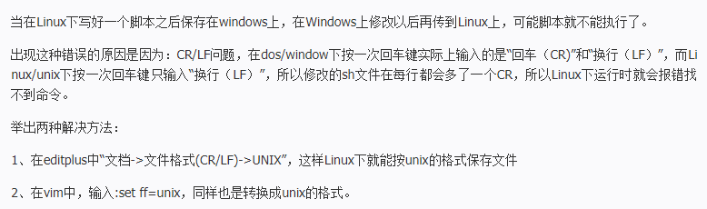

需要了解：
-

Shell脚本在Linux下运行错误的解决方法
当在Linux下写好一个脚本之后保存在windows上，在Windows上修改以后再传到Linux上，可能脚本就不能执行了
出现这种错误的原因是因为：CR/LF问题，在dos/window下按一次回车键实际上输入的是“回车（CR)”和“换行（LF）”，而Linux/unix下按一次回车键只输入“换行（LF）”，所以修改的sh文件在每行都会多了一个CR，所以Linux下运行时就会报错找不到命令。
-

网友投票有趣到睡不着觉的长篇漫画！
日本的漫画作品数量众多，登载的媒体也各有不同。不过大多数的漫画都会以单行本的方式发售，其中部分长寿作品的单行本能达到上百册，读一整天可能也读不完。那么有哪些作品是有趣到让人看到睡不着觉的漫画呢？
-

游戏王历史：从零开始的游戏王环境之旅第一期
充满男人浪漫的金属化怪兽的诞生后，游戏王OCG开始出现了不少金属爱好家。但【黑暗大法师】牌组一家独大的状况没有改变，【GoodStuff】牌组被挤到了一个尴尬的境地。决斗时只需要看“变形壶”是否能够起效，这已经不是【黑暗大法师】与【Good St...
-

动画《工作细胞》向教育机关与医疗设施无偿提供部
目前，TV动画《工作细胞》已经完结。在本作中，将细胞拟人化并配合着一段段小故事讲述了细胞工作的原理。这样寓教于乐的内容，受到了不少人的好评。首此影响，这次官方决定向教育机关与医疗设施免费公开一部分素材。
-

CloverWorks正式从A-1 Pictures分离成为独立公司
今日动画制作公司CloverWorks于官网上公布正式从A-1 Pictures分离，成为独立公司。
perl linux 操作简要汇总

更改文件权限
大概是linux系统管理的一个小技巧$chomd -R 755(也有644什么的) file
linux系统主要的

OVERLORD Ⅲ

工作细胞

我的英雄学院第三部

Angels of Death

刃牙
-